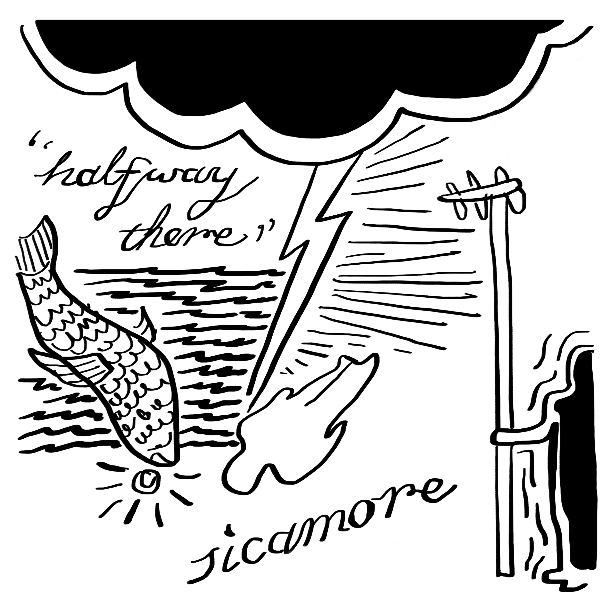
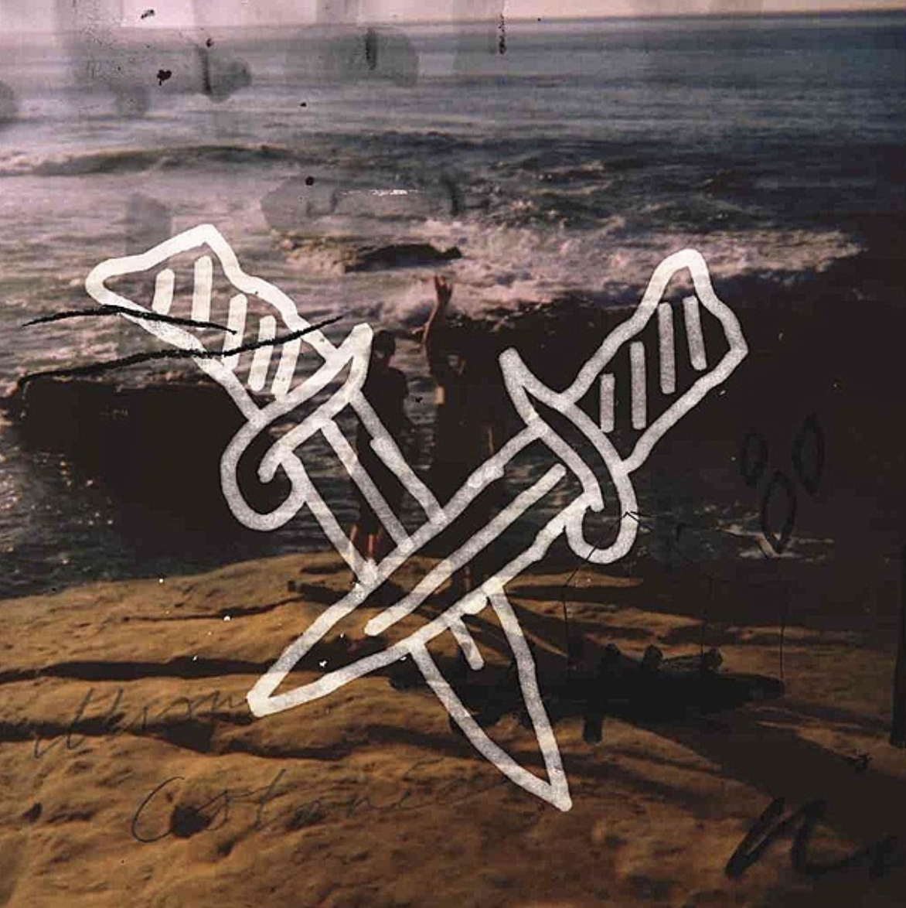
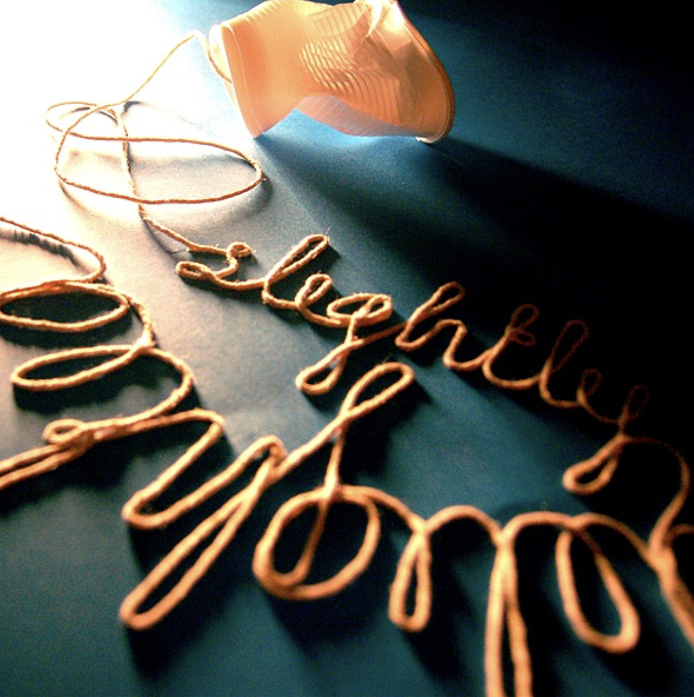
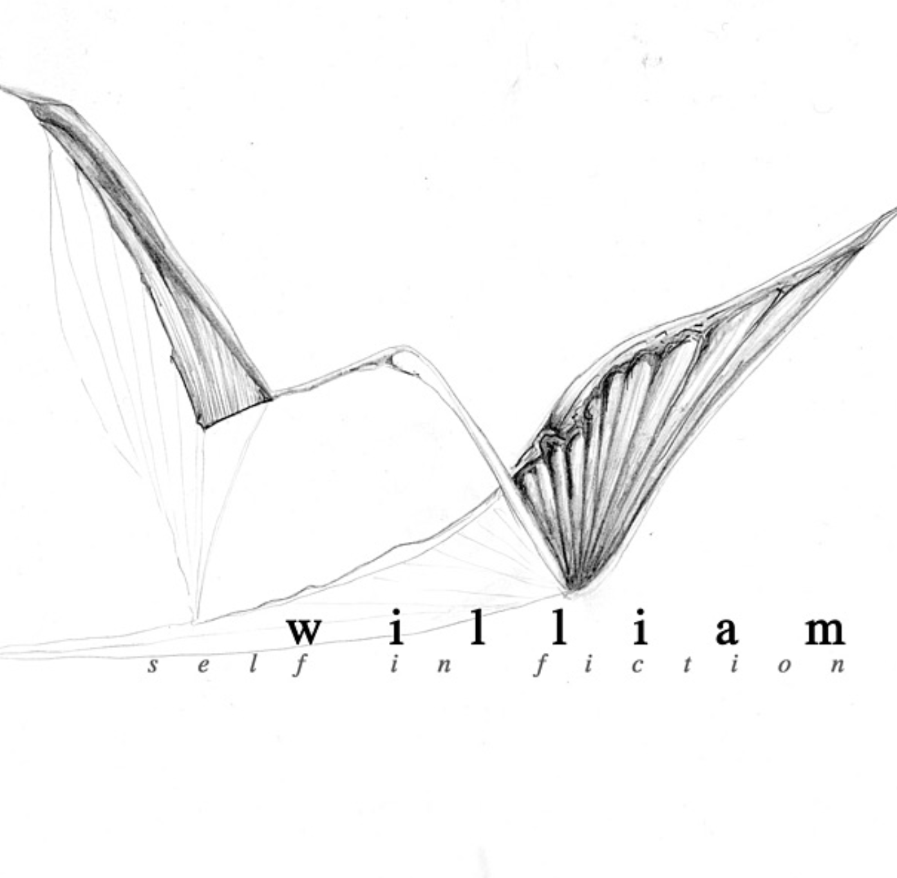
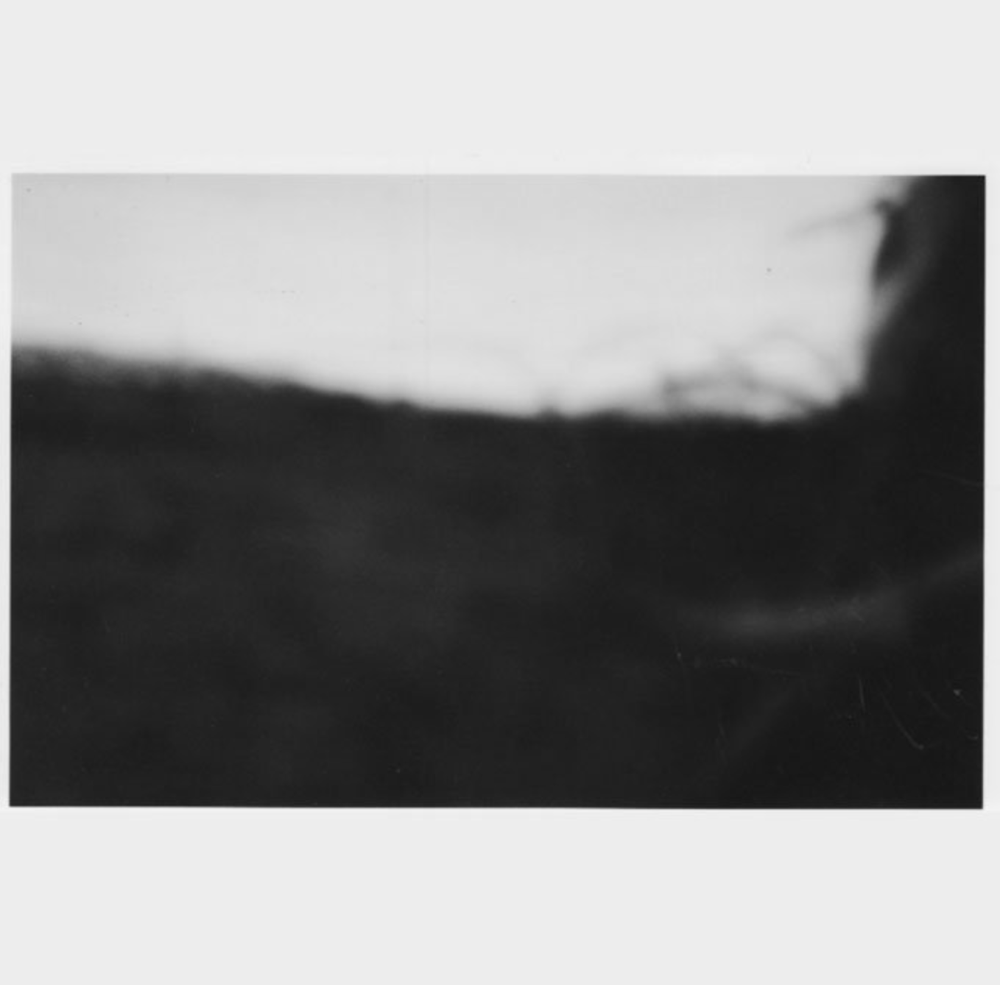

SICAMORE
"Halfway There" - Encyclopaedia Records 2026 | Gavin Housley - Acoustic Guitar and Vocals

"Halfway There" - Encyclopaedia Records 2026 | Gavin Housley - Acoustic Guitar and Vocals

"Split" - (Split Single with Calories) - Tough Love Records - 2009 | Gavin Housley - Lyrics, Guitar and Vocals

"Slightly Delighted" - Tough Love Records - 2009 | Gavin Housley - Lyrics, Guitar and Vocals
Gavin Housley - Lyrics, Guitar and Vocals

"Self in Fiction" - Tough Love Records - 2008 | Gavin Housley - Lyrics, Guitar and Vocals

"Engine Room Sessions" 2007 | Gavin Housley - Guitar, Drums

A Life in Music, Started at the Wrong Party
Getting thrown out of a sweet sixteen for showing up uninvited turned out to be the best thing that ever happened to me. My friend Ben, by way of apology, sat me down and taught me Wild Thing on bass. And so it began.
My parents, perhaps sensing something had shifted, bought me a MIJ Squier Stratocaster. My father had already done the essential work — putting Jimi Hendrix, Chuck Berry and Sam Cooke in my ears. I've never recovered.
School brought Violet Ray, where I played bass and sang "I Wanna Be Adored" — a song choice that said everything about a certain kind of adolescence. Britpop arrived and I migrated to guitar in The Fuse. University opened into something more considered: The Naciente Quartet, instrumental, cerebral, spiritual.
Falling in with skater friends, the solo project Sicamore loosened and expanded into William — two bands running at once. In the gaps: a single Serge Gainsbourg cover show; a long rehearsal stretch as The Lightermen that never quite ignited; covering bass for Black Peaches with Robert Smoughton on a tour that took in Green Man and Glastonbury.
Now things have come full circle. Sicamore is back. And The Naciente Quartet, I hope, shall return..